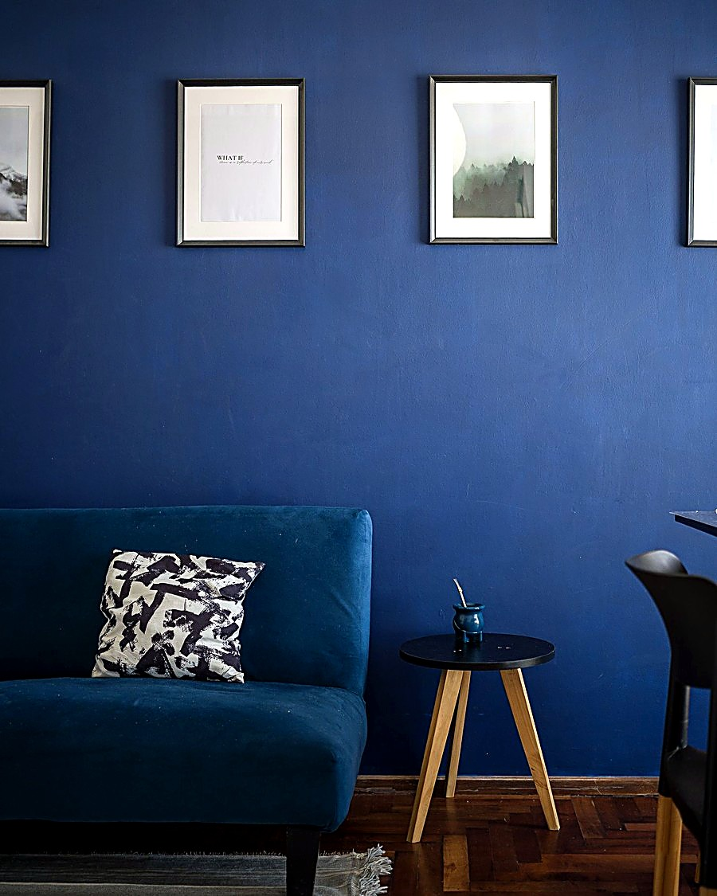

Tarif d'un peintre dans l'Eure (27) : grille de prix et conseils devis

Le tarif d'un peintre dans l'Eure dépend de nombreux facteurs : surface, état des murs, type de prestation (une couche, deux couches, enduit préalable), et accès au chantier. Voici des repères concrets pour s'y retrouver avant de demander un devis.
Prix moyens constatés dans l'Eure
- Peinture murale intérieure (support en bon état) : environ 20 à 35 €/m², fournitures comprises.
- Peinture avec préparation (rebouchage, ponçage) : environ 30 à 50 €/m².
- Plafond : généralement un peu plus cher au m² que les murs, du fait de la position de travail.
- Peinture de façade : de 25 à 60 €/m² selon l'état du support et le traitement anti-mousse nécessaire.
Ces fourchettes restent indicatives : un diagnostic sur place reste nécessaire pour un chiffrage précis, notamment sur une maison ancienne (voir notre article sur la rénovation des maisons à colombages).
Ce qui fait varier le prix
- L'état initial des murs (fissures, anciennes peintures écaillées, traces d'humidité).
- Le nombre de couches nécessaires pour une teinte uniforme, surtout pour couvrir une couleur foncée.
- La hauteur sous plafond et la nécessité d'un échafaudage pour certaines pièces ou façades.
- La gamme de peinture choisie (premier prix, milieu de gamme, haut de gamme).
- L'accessibilité du logement et la protection nécessaire (meubles, sols, mobilier fragile).
Comment lire un devis sans se tromper
Un devis sérieux détaille toujours : la surface traitée, la nature des travaux de préparation, le nombre de couches, la marque et la référence de la peinture utilisée, ainsi que les délais prévisionnels. Méfiez-vous des devis très succincts qui ne mentionnent qu'un prix global « tout compris » sans détail des prestations.
Devis gratuit, sans engagement
Pour un chiffrage précis adapté à votre logement dans l'Eure, le plus simple reste une visite sur place. C'est gratuit et sans engagement, et cela permet d'ajuster précisément le devis à l'état réel de vos murs ou de votre façade.
Un projet de peinture en Normandie ?
Demander mon devis gratuit